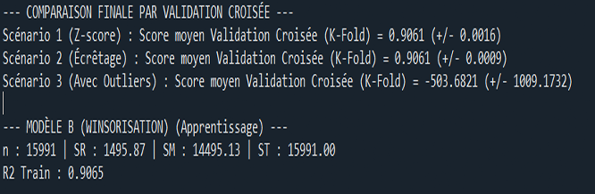
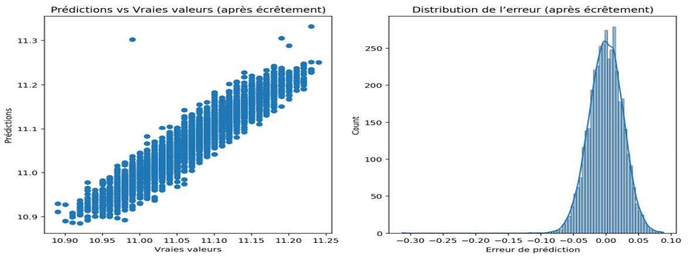

SAÉ 4.06 : Prédiction par Régression Linéaire Multiple
Contexte & Démarche Machine Learning
À l'ère du Big Data et de l'intelligence artificielle inductive, le rôle du statisticien a profondément évolué : nous ne nous contentons plus d'ajuster un modèle préconçu à des données restreintes, mais nous entraînons des algorithmes adaptatifs sur de grands volumes d'informations pour maximiser le pouvoir prédictif par généralisation.
Dans le cadre de cette SAÉ, l'objectif est d'implémenter un pipeline complet de Machine Learning (Scikit-Learn) afin de prédire une variable clinique continue : le diamètre d'une tumeur (Y), à l'aide de 10 indicateurs et tests médicaux (X_1 à X_10). L'enjeu majeur de cette modélisation réside dans la transition réussie d'une base de données brute de 20 000 observations vers une procédure décisionnelle stable, capable d'éviter le sous-ajustement (underfitting) et le surapprentissage (overfitting).
Nettoyage des Données & Analyse des Valeurs Atypiques
1. Gestion des Valeurs Manquantes
La base initiale présentait de rares valeurs manquantes localisées sur les variables X_1, X_3 et X_7. Face à un volume conséquent de 20000 lignes, ces anomalies ne représentaient que 0,02% de l'échantillon. Plutôt que d'introduire un biais artificiel via une imputation arbitraire (médiane ou moyenne), le choix d'une exclusion stricte a été privilégié, garantissant que le modèle n'apprenne que sur des mesures cliniques réelles.
2. Le Protocole Statistique d'Élimination des Points Aberrants
Pour assainir le jeu de données, un filtrage par le Z-score a été configuré avec un seuil critique fixé à 3 sigma (trois écarts-types). En vertu du Théorème Central Limite (TCL) appliqué à notre grand échantillon, la distribution des moyennes tend naturellement vers une Loi Normale, selon laquelle 99,7% des observations doivent être confinées dans cet intervalle.
Toute mesure affichant un score supérieur à 3 possède une probabilité mathématique d'occurrence marginale (< 0,3%). Identifier et traiter ces points extrêmes élimine les "effets de levier" néfastes, qui ont tendance à dévier la ligne de régression et à dégrader la justesse globale du modèle pour la majorité des patients.
Benchmark des Scénarios & Validation Croisée
Pour sécuriser la capacité de généralisation sur de futures données médicales hors échantillon, trois stratégies de traitement des extrêmes ont été mises en concurrence :
- Scénario 1 (Z-Score) : Suppression pure et simple des 31 individus identifiés comme aberrants. Rendement de précision optimal mais perte d'observations.
- Scénario 2 (Écrêtage / Winsorisation) : Remplacement des valeurs situées au-delà des percentiles critiques par les bornes maximales acceptables.
- Scénario 3 (Données Brutes) : Conservation de l'ensemble des anomalies sans filtrage. Ce scénario a généré un coefficient R^2 massivement négatif (-503,68) lors des phases de test, prouvant l'instabilité extrême induite par les points non corrigés.

Modèle Final Retenu : Le scénario par écrêtage (Winsorisation) a été sélectionné pour la mise en production. À niveau de précision équivalent à celui du Z-score, il affiche un écart-type deux fois plus faible ($0,0009$) au cours des 5 itérations de la validation croisée (K-Fold 5), offrant ainsi une stabilité structurelle maximale tout en conservant l'intégralité du volume de patients initial.
Décomposition Théorique de la Variance
Les métriques d'ajustement global obtenues sur l'ensemble d'apprentissage décrivent une modélisation hautement performante :
L'analyse mathématique de la variance montre que la somme des carrés du modèle absorbe environ 91% de la variabilité initiale des diamètres tumoraux (R^2 = 0,91). La part d'ombre (résidus, facteurs génétiques non mesurés) est confinée à seulement 9%, avec une variance d'erreur résiduelle (s^2 = 0,020) extrêmement basse.
Analyse de l'Influence Clinique (Coefficients Beta Standardisés)
La standardisation des variables explicatives a permis d'isoler l'impact biologique réel de chaque test médical sur l'évolution de la tumeur, indépendamment de leurs unités de mesure d'origine :
| Indicateur Médical | Coefficient Standardisé ($\beta$) | Impact Clinique Spécifique |
|---|---|---|
| Test X8 | + 0,51 | Prédicteur dominant majeur (Corrélation positive forte) |
| Test X9 | + 0,32 | Prédicteur secondaire significatif |
| Test X6 | - 0,15 | Effet inhibiteur inverse le plus marqué |
| Tests X1 / X7 | ~ 0,00 | Aucune influence significative constatée sur le diamètre |


Synthèse Globale & Fiabilité Clinique
L'étude démontre que la Régression Linéaire Multiple s'avère être une méthodologie robuste et hautement prédictive pour cette problématique médicale, à la condition stricte d'être associée à une ingénierie de nettoyage transparente. La parfaite convergence entre nos calculs théoriques de variance (ST, SM, SR) et la régularité des résidus valide l'exploitation de ce modèle comme un outil d'aide au diagnostic fiable et performant.
Explorer le Pipeline de Machine Learning
⬅ Retour au portfolio